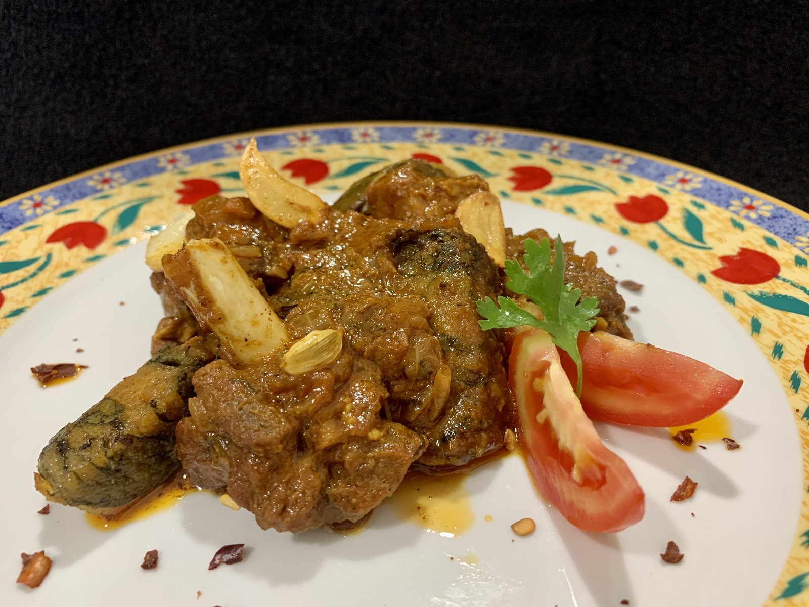
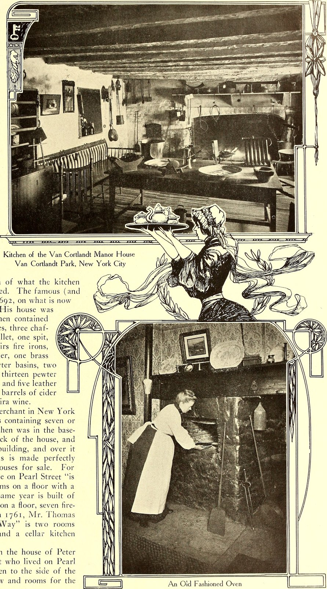

The Sovereign Zest of Sun-Ripened Tamarind
From centuries-old tropical canopies to the refined kitchens of master epicures, Tamarind Zesty extracts the luminous tension between crystalline natural tartaric acidity and rich caramelized fruit sugars. Pure, unfiltered, and deeply evocative.
Artisanal Tamarindus Craftsmanship
Each small-batch extraction celebrates the singular harmony of tartaric depth, floral citrus zest, and slow solar maturation.

Reserve Pod Paste
Dense, velvety stone-ground tamarind pulp extracted without boiling water, preserving delicate volatile aromatic citrus top notes and deep natural tang.
Discover Provision →
Volcanic Mortar Grind
Hand-crushed shallots, sun-dried chilies, and roasted coriander seeds emulsified with ripe tamarind paste inside basalt stone mortars for unmatched culinary texture.
Discover Provision →
Copper Kettle Glaze
Simmered in solid copper sauciers with organic palm sugar and citrus zest until transformed into a mirror-gloss lacquer for gourmet roasted dishes.
Discover Provision →The Culinary Chemistry of Natural Tartaric Acidity
Unlike citric or malic acids which hit the human palate with sharp, fleeting astringency, tamarind's primary acid is natural L-(+)-tartaric acid. It lingers on the lateral tongue receptors with an undulating, savory sourness that elevates fats, softens proteins, and provides incomparable culinary balance.
Our culinary masters pair this vibrant organic tartness with toasted ginger, shaved citrus peel, and raw jaggery, transforming everyday sauces into transcendent gastronomic poetry.
Experience the Atelier Tasting Salon
Private sensory consultations and chef allocations available by appointment at our New York tasting atelier. Reserve your private flight of single-origin harvests.